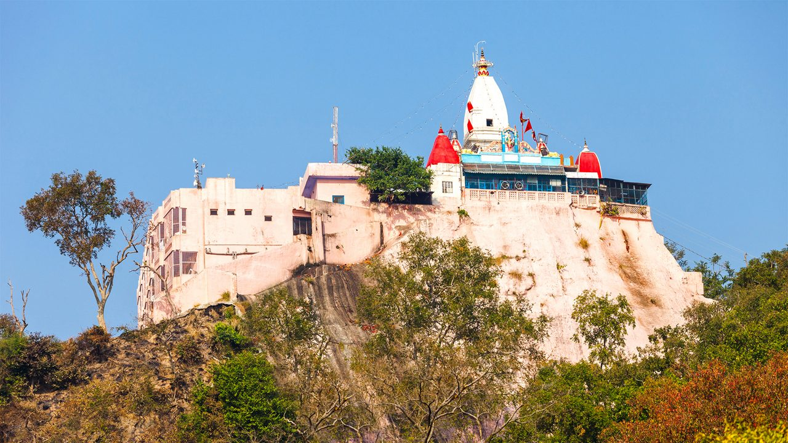
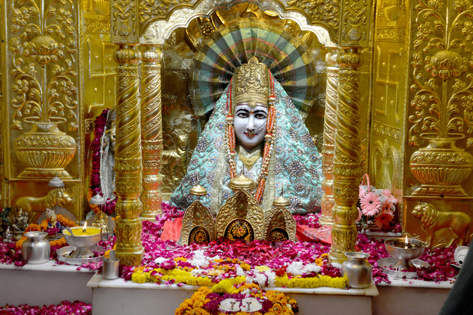
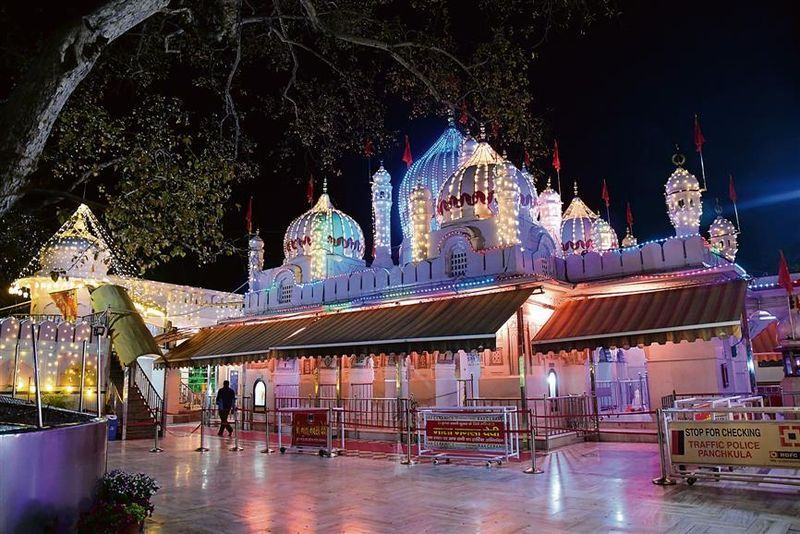
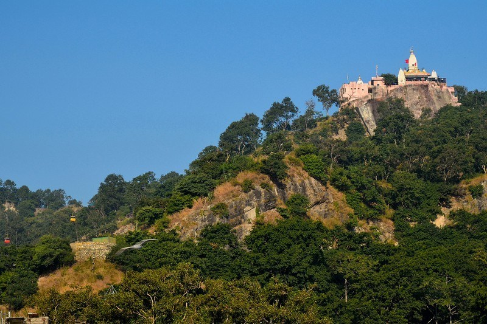
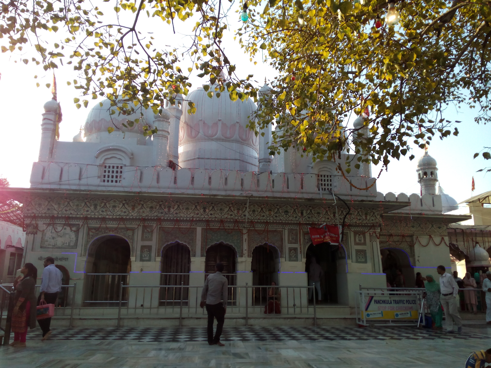

Mansa Devi Temple is one of the most revered Shakti Peethas and a powerful pilgrimage site perched atop Bilwa Parvat (Bilwa Hill) in Haridwar, Uttarakhand. Dedicated to Goddess Mansa Devi — an incarnation of Goddess Durga worshipped as the fulfiller of wishes (Mansa meaning "wish" in Sanskrit) and protector against snake bites, poisons, and all forms of negativity — the temple is believed to grant the sincere desires of devotees who tie red threads (manokamna sutra) on the sacred branches inside the sanctum. The idol of Mansa Devi is depicted with three tongues and multiple arms, symbolizing her fierce yet benevolent form that destroys evil and bestows boons. Situated overlooking the holy Ganges and the bustling ghats of Haridwar, the temple offers panoramic views of the city, the river, and the distant Himalayan foothills, blending spiritual potency with natural serenity.
Accessible via a scenic cable car ride (ropeway) from the base near Har Ki Pauri or a moderate 3 km uphill trek, Mansa Devi is a favorite among pilgrims seeking blessings for health, prosperity, family well-being, and wish fulfillment. The temple complex includes smaller shrines, a beautiful courtyard, and a vibrant atmosphere during festivals like Navratri, when thousands gather for special aartis and pujas. Legend holds that the goddess appeared here to protect her devotees, and the red threads tied by millions over the years stand as living proof of her grace. Whether arriving at sunrise for quiet darshan or during the evening glow, Mansa Devi radiates maternal energy — a divine mother who listens, protects, and transforms every sincere prayer into reality in the sacred embrace of Haridwar.
October to March for pleasant weather and comfortable ropeway/trek; peak spiritual energy during Navratri (March–April & September–October) with special decorations, aartis, and crowds. Early morning darshan (opens ~5–6 AM) offers peace and shorter queues; evenings provide beautiful sunset views over Haridwar. Avoid heavy monsoon (July–September) due to slippery paths and occasional ropeway closures; summer can be hot but vibrant during festivals.
Mansa Devi darshan with wish-fulfilling red thread tying, thrilling cable car ride with panoramic Ganges views, smaller shrines in the complex, evening aarti during Navratri, nearby Chandi Devi Temple (via another ropeway), and sweeping vistas of Haridwar ghats & city — perfect for wish offerings, photography, meditation, and experiencing the protective grace of the goddess overlooking the holy river.
Buy ropeway tickets early (especially during Navratri) or opt for the trek if fit, write your wish clearly on the red thread and tie it inside the sanctum, wear modest clothing and remove shoes in the temple area, carry water/snacks for the visit, be cautious of monkeys on the hill, maintain silence during darshan, avoid littering in this sacred site, and combine with Har Ki Pauri Ganga Aarti or nearby attractions for a complete Haridwar spiritual day.
"On the heights of Bilwa Parvat, Mansa Devi waits not with judgment, but with open arms — every red thread a whispered dream, every prayer a promise kept. In her gaze over the flowing Ganga, wishes find their wings, fears dissolve, and the heart learns that true fulfillment begins the moment faith takes the first step upward."